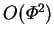
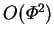

The transpiration boundary condition (2.59) is essential to the analysis of the Stefan diffusion tube, and is used in all the cited studies; several of them also give derivations.
Although many
questions have been raised about the validity of the use of the Stefan
diffusion tube for the determination
of diffusivity coefficients, the results obtained are probably of acceptable
accuracy, since, as is easily shown, the evaporation rate predicted by the
one-dimensional analysis is asymptotically correct to  as
as
 , and most
experiments occur with very low values of
, and most
experiments occur with very low values of  . To the best of my
knowledge, no upper bound has been placed on the errors caused by finite
values of
. To the best of my
knowledge, no upper bound has been placed on the errors caused by finite
values of  , though given the symmetry property derived in
§2.6.3, it should be at most  for the overall
Sherwood number.
, though given the symmetry property derived in
§2.6.3, it should be at most  for the overall
Sherwood number.
The Stefan diffusion tube is a classical vapour transport problem, and embodies many of the physical phenomena of the present problem. As such, the literature surrounding it has been very useful.